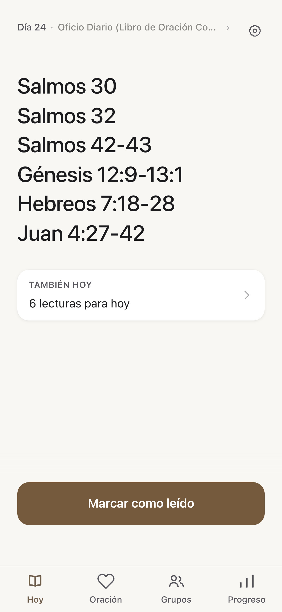
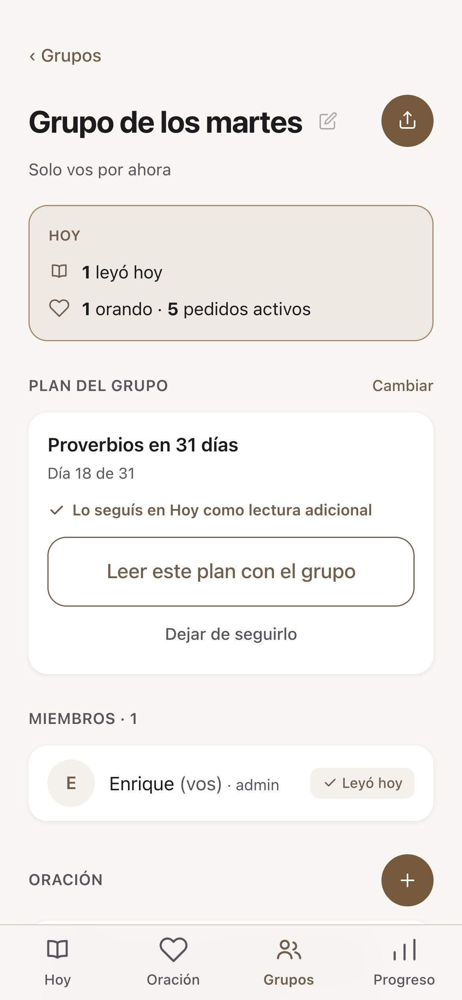
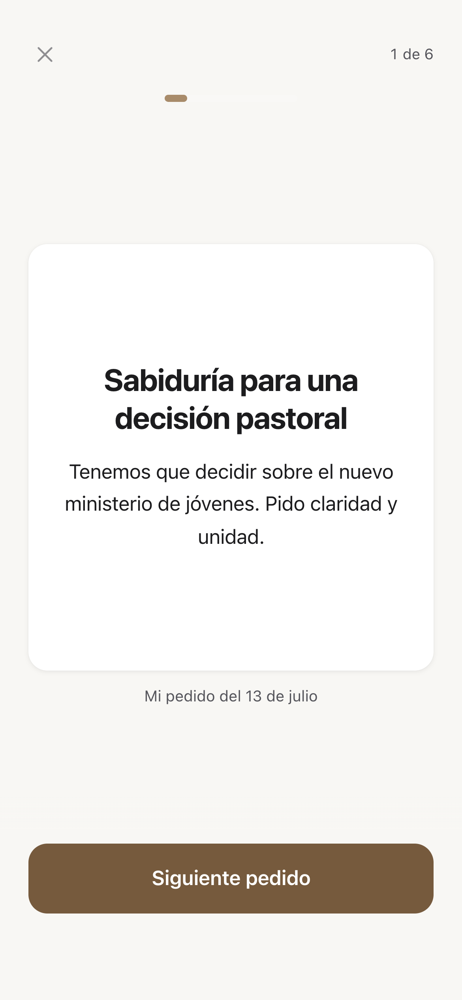
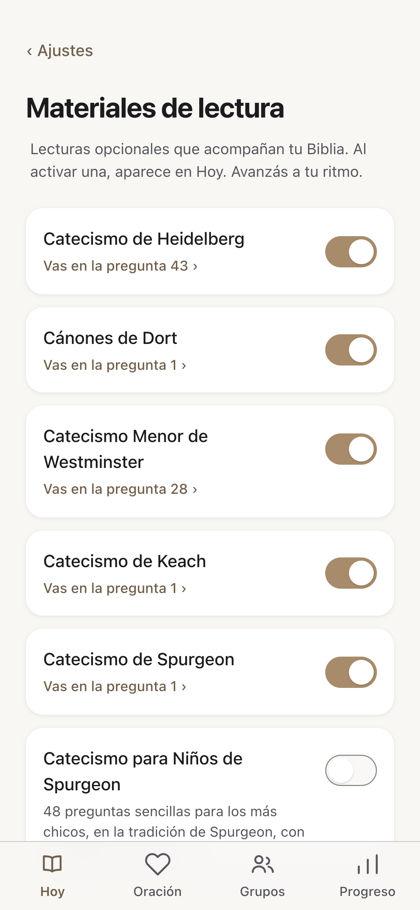

Una app gratuita para sostener el hábito de lectura y oración de tu congregación.
Deslizá para conocerla →

La app no incluye el texto bíblico. Dice qué leer hoy e invita a abrir la propia Biblia — y si no está a mano, un toque abre el capítulo en YouVersion.
Creás un grupo, compartís el código, y cada miembro adopta el plan del grupo. Todos llegan a la reunión habiendo leído lo mismo.


Los pedidos se comparten dentro del grupo, cada quien los ora uno por uno, y cuando Dios responde hay un lugar para contar el testimonio.
Heidelberg, Dort, Westminster, Keach y Spurgeon — también en versión para niños. Cada pregunta trae pasajes para buscar en la propia Biblia, y se puede compartir como imagen.

No hay redes, comentarios, anuncios ni ruido. Solo la guía del día.
Funciona en cualquier celular desde el navegador.
Español, inglés y portugués, con un lenguaje cálido y cercano.
Creá un grupo y compartí el código de invitación
Elijan un plan para leer juntos
Lleguen a la reunión con lo mismo leído
leetubiblia.com
Gratis · funciona en tu navegador · es / en / pt